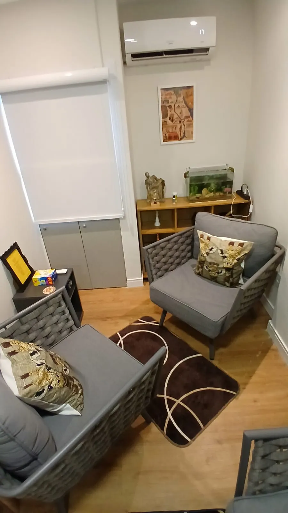

一对一流程
根据情况报价- 30 分钟前期环节，使用 SMCIT
- 个人报告
- 60 分钟反馈，萨尔瓦多线下或线上
- 会谈私人录像
当心理健康、工作条件和管理决策相互交织时，不了解背景就行动只会增加不确定性。管理者指导帮助管理者和人力资源专业人士认识自己的管理方式如何影响团队压力，并依据专业标准确定下一步。
这一流程把自评问卷 SMCIT 与由职业医学医生 Ana Paula Teixeira 主持的一对一辅导结合起来。
简短的初步沟通，用于了解背景、紧急程度，以及这种形式是否符合您的需求。
管理者需要与一位正在承受痛苦的团队成员谈话，却不知道该如何处理。
团队面临超负荷或冲突，负责人不知道从哪里开始。
人力资源部门希望帮助一位经常收到团队投诉的管理者做好准备。
企业正在重组工作，希望管理者在推动变革的同时不让团队生病。
管理者希望有方法地了解，自己需要在哪些方面提升才能保护团队。
每种情况都有其特点。初步沟通用于了解需求，判断管理者指导是否是合适的形式，或者是否需要其他类型的支持。
这是一个分两个环节的一对一流程，帮助管理者培养预防和管理团队压力的能力。
SMCIT（Stress Management Competency Indicator Tool，压力管理能力指标工具）由英国职业健康与安全监管机构 Health and Safety Executive 与 CIPD 合作开发。它描述了 66 种领导行为，归入与预防团队压力相关的 4 项能力。职业医学医生的辅导以这一结果为起点，讨论您的实际情况并确定下一步。
目标不是给出自动化的答案，也不是取代企业的内部流程，而是帮助管理者更好地理解自己的角色，更清晰地推进下一步。
您填写 SMCIT，这是一份自评问卷，对 66 条关于您管理方式的陈述表明同意程度。在同一次会谈中，我们梳理您最主要的困扰或挑战。结果反映的是您自己的看法：不评估团队，不衡量任何人的健康，也不是绩效考核。
您将获得：
在您收到报告后的一到两周内，与 Ana Paula Teixeira 医生进行一对一会谈，可在萨尔瓦多（Parque Bela Vista 的 Clínica Kirinonomori）线下或线上进行。会谈与您一起解读结果，并把它与您提出的挑战联系起来：什么在影响团队、先从哪里着手，以及哪些是您的职责、哪些属于其他部门。
您将获得：
这些材料不能替代医学报告、司法鉴定意见、组织诊断或法律咨询。

适合管理团队、希望预防和管理团队压力源的管理者和人力资源专业人士。
这不是心理治疗、心理评估、绩效考核，也不是个人临床随访。它也不能替代组织的心理社会诊断、司法鉴定意见或法律咨询。
我是职业医学医生、作者、职业心理健康研究者。近三十年来，我在临床和企业环境中工作，协助分析健康、工作条件和管理决策相互交织的情境。
我毕业于巴伊亚联邦大学（UFBA）医学专业，是职业医学专科医生（CRM-BA 12797 · RQE 7237），目前在 Escola Bahiana 攻读健康技术硕士，研究 OMIS-R 量表的巴西葡萄牙语效度验证。我服务过不同规模和行业的机构，包括矿业、钢铁和实验室。
在管理者指导中，我的角色是帮助您解读结果，并讨论可行的下一步。决定权仍在您和您的组织手中。
SMCIT 即压力管理能力指标工具（Stress Management Competency Indicator Tool），由英国职业健康与安全监管机构与 CIPD 合作开发。这是一份关于 66 种与预防团队压力相关的领导行为的自评问卷。它不是诊断，也不预测疾病。
不能。它不能替代个人临床随访、心理评估、绩效考核、组织的心理社会诊断或法律咨询。
接受服务的本人：管理者或人力资源专业人士。
系统根据您的回答生成个人报告。在您收到报告后的一到两周内，进行 60 分钟的反馈会谈，一起解读结果。
都可以。反馈可以在萨尔瓦多线下进行，也可以在线上进行。
不是。这是一次围绕您的 SMCIT 报告进行的 60 分钟会谈，会录像供您日后查阅。它不等同于医学报告、司法鉴定意见或对企业的评估。
请发送一条简短消息，说明情况类型、您在组织中的角色和紧急程度。初步沟通用于了解背景、确认可预约时间，并在发送问卷之前确认形式。